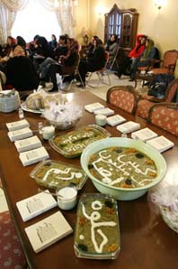
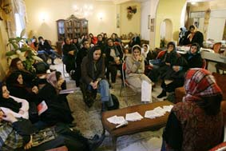
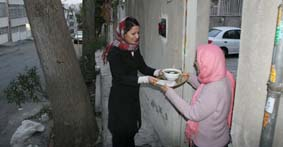

پذيرش > کمپین در بند > پروین اردلان،جلوه جواهری، مریم حسین خواه، ناهید کشاورز > آش نذری مادران کمپینی به نیت آزادی مریم و جلوه


 آش نذری مادران کمپینی به نیت آزادی مریم و جلوه آش نذری مادران کمپینی به نیت آزادی مریم و جلوه
5 دی 1386 - - نسخه قابل چاپ
تغییر برای برابری- نیلوفر انسان:روز سه شنبه، چهارم دیماه ، به همت مادر جلوه جواهری و دیگر اعضای کمیته مادران کمپین یک میلیون امضاء برای تغییر قوانین تبعیض آمیز، مراسم پختن آش نذری به نیت آزادی جلوه جواهری و مریم حسین خواه، دو تن از اعضای کمپین یک میلیون امضاء که بیش از یک ماه است در زندان بسر می برند، برگزار شد.

در ابتدای مراسم آش خوران گوهر بیات، مادر جلوه جواهری به درخواست منصوره شجاعی در جمع صمیمانه ای که به نیت آزادی دو دوست ترتیب داده شده برای حاضران سخن گفت. وی گفت : " در این چند وقت هر چه به دادستانی مراجعه کردیم ، هر چه به این در و آن در زدیم تا کار بچه ها را درست کنیم نشد ، تا اینکه دست به دامن فاطمه زهرا شدیم و آش رشته برای آزادی آنها نذر کردیم . "
او چنین ادامه داد : " بچه های ما به زندان رفته اند . راه بچه های ما ستودنی است و قانون باید به آنها کمک کند . ائمه گفته اند از دامن زن مرد به معراج می رود . و این زنان و بچه های ما باید آرامش داشته باشند تا بتوانند آرامش را به دیگران هم بدهند . بچه ها دارند کار اجتماعی می کنند و زندان حقشان نیست . چطور می شود از آدمی که در دانشگاه جامعه شناسی خوانده خواست که نسبت به جامعه اش بی تفاوت باشد . من آرزو می کنم که بچه های ما به هر چه می خواهند برسند . "

منصوره شجاعی ، در ادامه سخنان گوهر بیات حاضران در مراسم را مورد خطاب قرار داد: " مادر جلوه پیش از مراسم گفت که من همه راهی را رفته ام تا دخترم آزاد شود ، حالا که نشد ، راه دل خودم را می روم . "
پس از سخنان گوهر بیات ، نسرین فرهومند ، به نمایندگی از کمیته مادران کمپین یک میلیون امضاء برای تغییر قوانین تبعیض آمیز پیام کمیته مادران کمپین را قرائت کرد .
سپس کاوه مظفری ، همسر جلوه جواهری با تاکید سخنان گوهر بیات گفت : " تا پیش از این فکر می کردم که صحبت از چیزهای حد اقلی خیلی سخت است . اما با فشاری که این چند وقت به ما وارد آمده است فکر می کنم که اینقدر صحبت از این چیزهای حد اقلی را زیاد می کند که دیگر برای آدم عادی می شود . من می خواهم باز تاکید کنم که کار جلوه سیاسی نیست . اما بعضی ها دوست دارند که کار او و مریم را سیاسی نشان دهند و حکم آنها را آنقدر بالا بگیرند تا قاضی به حکم کم راضی شود . امیدوارم روزی یا وادار بشوند راستش را بگویند و یا بپذیرند که اشتباه کرده اند. "

مهمان بعدی ژیلا بنی یعقوب، روزنامه نگار، بود. اما منصوره شجاعی در میان سخنان کاوه مظفری و ژیلا بنی یعقوب دفترچه کمپین یک میلیون امضاء را نشان داد و گفت : "اسلحه بچه های ما این دفترچه های تاثیر قوانین بر زندگی زنان است. حالا اگر این دفترچه ها که چیزی جز همین قوانین موجود در آن نوشته شده اینقدر خطرناک است پس لابد حق بچه های ما زندان است. "
ژیلا بنی یعقوب در سخنان خود چنین گفت : " من پس از دستگیری روز 13 اسفند ، با جلوه هم سلول بودم . در مطلب مربوط به خاطرات زندانم هم نوشتم و حالا هم می گویم که آرامش جلوه در زندان به من آرامش می داد و من الان پس از دستگیری جلوه دلیل آرامش او را می فهمم . یکی از دلایلش وجود چنین مادری است . فکر می کنم همه مادران ما باید ار مادر جلوه یاد بگیرند ، دیدن چنین مادرانی باعث افتخار است و به ما روحیه می بخشد . "
او سپس خطاب به مادر جلوه گفت : " در زندان آرامش جلوه به من آرامش و انرژی می بخشید و الان دیدن شما و ایمان و اعتقادتان به من انرژی می بخشد . " گوهر بیات نیز در پاسخ به ژیلا بنی یعقوب گفت :" بچه های ما هدفشان انسانی و گرانقدر است . وقتی هدفشان مثبت است پس باید پشتیبان هم داشته باشند . "

آسیه امینی با اشاره به اینکه آیا جنبش زنان ایران نخبه گراست یا خیر گفت: " من هم در اوین با مریم و جلوه هم بند بودم . همه چیز را شما بهتر از من می دانید . اینجا قصد دارم به مطلب دیگری اشاره کنم . افرادی که با جنبش زنان ایران آشنا نیستند گاهی سوالاتی در ذهنشان شکل می گیرد مثل اینکه به نظر می رسد که جنبش زنان ایران منحصر به طبقه روشنفکر و الیت است . راه مشترک با خواسته های مردم ندارد . و یا اینکه آیا این مشکلاتی که شما می گویید مشکل زنان هم هست ؟ و خوب من خودم شخصا با آوردن نمونه به آنها می گویم که اتفاقا این خواسته ها، مشکل همه آنهاست . "
او در ادامه با اشاره به مراسم نذری پزان و راهی که جنبش زنان به خواسته های توده دارد می افزاید : " ایده امروز ، ایده آش پزان ، واقعا ایده زنانه ای است . این ایده نشان می دهد که ما سر دشمنی با فرهنگ و رسوم و خواسته های عام نداریم . جلوه که وجودش آرامش است ، مریم هم که همیشه هر موقع من دیدمش مثل اسفند روی آتش بود . حتما این روزها اتفاقی دارد در اوین می افتد که اتفاقی است فرخنده ، هر چند که ممکن است برای نزدیکان این دو ، همسرانشان و همه ما سخت باشد اما فکر می کنم که همه هزینه هایی که ما پرداخت می کنیم برای جنبش زنان یک فرصت طلایی است . "

آمنه شیر افکن، روزنامه نگار، نیز در بخشی از سخنانش در رابطه با لایحه حمایت از خانواده گفت : " در گفتگویی که با زنان مجلس هفتم داشتم آنها معتقدند که بررسی لایحه به مجلس هفتم قد نمی دهد . اما درباره مشکل ازدواج و ارث اقداماتی دارد صورت می گیرد . که هر چند به نظر ما شاید خیلی اندک باشد اما به هر حال قدم مثبتی است . "
او سپس در بخش دیگری از سخنانش با اشاره به سخنان آسیه امینی گفت : " من هم در ابتدا تصورم همین بود که جنبش زنان متعلق به طبقه الیت و روشنفکر است . تا اینکه موضوع کمپین یک میلیون امضاء پیش آمد . من تصور می کنم کمپین خیلی کمک می کند . خیلی از مسائل را به بطن جامعه برده و خیلی کمک کرده تا نخبه گرایی جنبش زنان ایران کم شود . "

زارا امجدیان از اعضای کمپین نیز در قسمتی از سخنان خود گفت : " چیزی که مرا اذیت می کند این است که چرا واقعا این بچه ها باید به زندان بروند . بشر 6000 سال ، کمتر یا بیشتر ، تاریخ دارد . هر آنچه که دستاورد بشر در این 6000 سال بوده مبنایش بر آزادی قرار دارد و اصلا بشر از ابتدا آزاد بوده . پس می تواند اختیارش را در دست بگیرد و اگر اینطور نبود اصلا پیشرفتی نمی کرد. اما علی رغم همه این حرفها هنوز در خیلی از نقاط کره زمین آزادی را از انسان ها سلب می کنند. یکی از این نقاط، ایران است . یعنی واقعا مریم و جلوه حق این را ندارند که برای ایجاد یک زندگی بهتر و عادلانه تر تلاش کنند؟ به هر حال من خوشحالم که مریم و جلوه این طور مقاوم هستند و امثال من را هم چنان به تغییر امیدوار نگه می دارند."
"چرا جوانهایی مثل جلوه و مریم باید بازداشت شوند به جرم مطرح کردن خواسته شان ؟ آن هم جوانهایی که برای همین نظام بها داده اند . برادرهای جلوه شهید شده اند . پدر مریم سالها در جبهه بوده و جانباز هست . حاکمیت اگر به حرف اینها گوش نکند پس به حرف چه کسی می خواهد گوش کند ؟ "این را سوسن طهاسبی عضور دیگر کمپین یک میلیون امضاء می گوید . وی چنین اضافه می کند : "من 5 ، 6 سال است که جلوه و مریم را می شناسم . هر دوی آنها را دوست دارم و پیشرفت هر دوی آنها را جلوی چشمانم دیده ام و الان برایم سخت است که ببینم آنها در زندان هستند ." الان در حدود 1 سال و چهار ماه از آغاز به کار کمیپین گذشته . دستاورد کمپین در این مدت بسیار مثبت بوده . ما توانستیم گفتمان حقوق زنان را عمومی کنیم و دستاوردش هم مواردی بود که آمنه به آن اشاره کرده و توسط افراد حاضر در مجلس مطرح شده و آن وقت برای من جای تعجب است که چطور جوانهای ما باید به جرم مطرح کردن همین مسائل بازداشت شوند . چنانچه از زمان شروع به کار کمپین بیش از 42 نفر در این زمینه بازداشت شده اند. "
فلوریا از فعالان کمپین در کردستان می گوید :" مادران هانا و روناک باعث شدند مادران دیگری به جمع فعالان کمپین یک میلیون امضاء بپیوندند . خوشبختانه هرکدام از این جزوه ها باعث اطلاع رسانی شده و من متشکرم از اعضای کمپین که این جزوه ها را تهیه کرده تا آگاهی بدهد. وی که از حمایت فعالان زن از زندانی های عقیدتی خوشحال است می گوید :"اطلاع رسانی سریع خوشحالم می کند چرا که در دوره زمانه ما کسی صدایمان را نمی شنید."
او از روناک صفارزاده و هانا عبدی از فعالان کمپین یاد می کند که حالا در زندان به سر می برند. دخترانی که عضو انجمن آذر مهر بودند و در توزیع دفترچه های کمپین فعالیت می کردند. اما به گفته فلوریا هنوز اتهام این دو مشخص نیست.

و در پی آن نوشین احمدی خراسانی، فعال حوزه زنان در بخشی از صحبت های خود ضمن تاکید بر تلاش مدنی و حق جویانه روناک و هانا می افزاید، که فعالیت های آنان در ارتباط با حقوق زنان و مسالمت آمیز بوده است.
بهاره هدایت ،دبیر کمیسیون زنان دفتر تحکیم وحدت نیز که به همراه تنی چند از اعضای دفتر تحکیم وحدت در این مراسم شرکت کرده بود از ملموس بودن خواسته جنبش یک میلیون امضاء می گوید و این که این جنبش توانسته گفتمان برابری را در سطح افکار عمومی ترویج کند. او در ادامه می افزاید: "اما هنوز حساسیت به خرج می دهند و این می شود سرچشمه برخورد با کمپین . کاش می شد با اینها هم از در گفتگو وارد شد ."
پس از اتمام صحبت های حضار، مادران کمپینی آش نذری را به همراه دفترچه های توضیح قوانین به در خانه همسایه ها و اهالی محل بردند، به نیت آزادی دو فرزند کمپینی خود: جلوه جواهری و مریم حسین خواه.

ارسال به
بالاترین
،
توییتر
،
فریندفید
،
فیسبوک
در همين بخش :
 بهاره هدایت را آزاد کنید؛ درخواست ۴۵۵ تن از فعالان زنان، دانشجویی واجتماعی از قوه قضاییه بهاره هدایت را آزاد کنید؛ درخواست ۴۵۵ تن از فعالان زنان، دانشجویی واجتماعی از قوه قضاییه
بیانیه بیش از ۱۵۰ تن از مدافعان حقوق بشر بین المللی برای آزادی بهاره هدایت و مریم شفیع پور
ششمین روز از کمپین «ده روز با بهاره هدایت» با عنوان «روز سلامت»
پیام ضیا نبوی و مجید دری از زندان کارون اهواز به کمپین«ده روز با بهاره هدایت»
روز پنجم از کمپین ده روز با بهاره هدایت:« بهاره، یک فرزند و یک خواهر است»
ديگر بخش ها :
طرح یک میلیون امضا
|
مقالات
|
سایت نوشته ها
|
اخبار
|
گزارش كمپين
|
گفت و گو
|
علیه سکوت
|
كوچه به كوچه
|
نامه های شما
|
گزارش ویژه
|
گفتگو با اعضا
|
ویژه سالگرد کمپین
|
تصویر برابری
|
دل آرام علی
|
تریبون
|
مقالات
|
تاریخ شفاهی
|
خارج از چارچوب
|
کتابخانه
|
درباره کمپین
|
کمپین در شهرها
|
کمپین در بند
|
صدای تغییر
|
ویژه 22 خرداد
|
لایحه حمایت از خانواده
|
گالری
|
عشا مومنی
|
امیر یعقوبعلی
|
خدیجه مقدم
|
راحله عسگری زاده و نسیم خسروی
|
پروین اردلان،جلوه جواهری، مریم حسین خواه، ناهید کشاورز
|
زینب پیغمبرزاده
|
سعیده امین، سارا ایمانیان، محبوبه حسین زاده، ناهید کشاورز و همایون نامی
|
احترام شادفر
|
نسیم سرابندی زاده،فاطمه دهدشتی
|
وبلاگ مهمان
|
پرونده خرم آباد
|
دستگیری ها
|
مریم مالک
|
پرستو اللهیاری
|
مهرنوش اعتمادی
|
سمیه رشیدی
|
Other Languages
|
همراهان
|
«فراخوان کمپین ده روز با بهاره هدایت»
| English
|